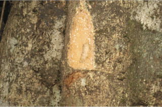
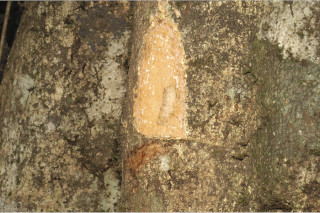
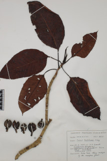
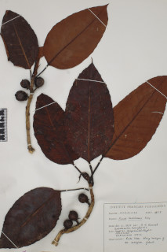
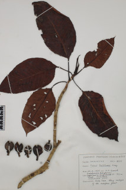
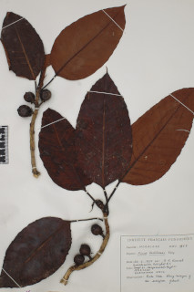

Botanical descriptions:
ಸಸ್ಯದ ವೈಜ್ಞಾನಿಕ ವಿವರ:
Botanical descriptions:
மரங்களின் பண்புகள்:
Habit:
ಪ್ರಕೃತಿ :
Habit:
வளரியல்பு:
Large trees, beginning as epiphytic later become strangler and independent, up to 25 m tall.
25 ಮೀ. ಎತ್ತರದವರೆಗಿನ ದೊಡ್ಡ ಗಾತ್ರದ ಮರಗಳಾದ ಈ ಪ್ರಭೇದ ಪ್ರಾರಂಭದಲ್ಲಿ ಅಪ್ಪು ಸಸ್ಯವಾಗಿದ್ದು ನಂತರ ಆಶ್ರಯದ ಸಸ್ಯವನ್ನು ಅದುಮಿ ಬೆಳೆದು ನಂತರ ಸ್ವತಂತ್ರವಾಗುತ್ತದೆ.
Large trees, beginning as epiphytic later become strangler and independent, up to 25 m tall.
மிகப்பெரிய மரம், பொரும்பாலும் ஒட்டு செடியாக ஆரம்பிக்கின்றன முதிரும் போது இவை வளர்ந்த மரத்தை கொன்று தனித்த மரமாகின்றன, 25 மீ. உயரம் வரை வளரக்கூடியது.
Trunk & Bark:
ಕಾಂಡ ಮತ್ತು ತೊಗಟೆ:
Trunk & Bark:
தண்டு மற்றும் மரப்பட்டை:
Bark pale brown to yellowish, smooth; blaze cream.
ತೊಗಟೆ ತೆಳು ಕಂದು ಬಣ್ಣದಿಂದ ಹಳದಿ ಛಾಯೆಯಳ್ಳ ಬಣ್ಣದಲ್ಲಿದ್ದು ನಯವಾಗಿರುತ್ತವೆ;ಕಚ್ಚು ಮಾಡಿದ ಜಾಗ ಕೆನೆ ಬಣ್ಣದಲ್ಲಿರುತ್ತದೆ.
Bark pale brown to yellowish, smooth; blaze cream.
மரத்தின் பட்டை வெளிறிய ப்ரவுன் நிறமானது முதல் மஞ்சள் நிறமானவை, வழவழப்பானது; உள்பட்டை கிரீம் நிறமானது.
Branches and branchlets:
ಕವಲುಗಳು ಮತ್ತು ಕಿರುಕೊಂಬೆಗಳು:
Branches and branchlets:
கிளைகள் & சிறிய நுனிக்கிளைகள்:
Branchlets stout, terete, glabrous, with annular scars.
ಕಿರುಕೊಂಬೆಗಳು ಧೃಢ ಹಾಗೂ ದುಂಡಾಗಿದ್ದು ರೋಮರಹಿತವಾಗಿರುತ್ತವೆ ಮತ್ತು ವಲಯಾಕಾರದ ಗುರುತುಗಳಿಂದ ಕೂಡಿರುತ್ತವೆ.
Branchlets stout, terete, glabrous, with annular scars.
சிறியநுனிக்கிளைகள் தடித்தவை, குறுக்குவெட்டுத் தோற்றத்தில் வளையமானது, உரோமங்களற்றது, இலையடிச்செதில் உதிர்ந்ததால் உண்டாகும் வட்டவடுக்களுடையது.
Exudates:
ಜಿನುಗು ದ್ರವ:
Exudates:
சாறு:
Latex white, profuse.
ಜಿನುಗು ದ್ರವ ಬಿಳಿ ಬಣ್ಣದಲ್ಲಿದ್ದು ವಿಫುಲವಾಗಿರುತ್ತದೆ.
Latex white, profuse.
வெள்ளை நிற பால் அதிகளவு சுரக்கிறது
Leaves:
ಎಲೆಗಳು :
Leaves:
இலைகள்:
Leaves simple, alternate, spiral; stipules to 3.5 cm long, lanceolate, glabrous, caducous leaving annular scars; petiole stout, 2.5-4 (-10) cm long, canaliculate, glabrous; lamina 10-25 x 5-15 cm, ovate, apex acuminate, base rounded to subtruncate, margin slightly undulate, thickly coriaceous, glabrous, drying brown; midrib flat above; secondary_nerves 12-15 pairs, looping near margin; tertiary_nerves broadly reticulate.
ಎಲೆಗಳು ಸರಳವಾಗಿದ್ದುಪರ್ಯಾಯ ಮತ್ತು ಸುತ್ತು ಜೋಡನಾ ವ್ಯವಸ್ಥೆಯಲ್ಲಿರುತ್ತವೆ; ಕಾವಿನೆಲೆಗಳು 3.5 ಸೆಂ.ಮೀ.ವರೆಗಿನ ಉದ್ದವಿದ್ದು ಭರ್ಜಿಯ ಆಕಾರ ಹೊಂದಿದ್ದು ರೋಮರಹಿತವಾಗಿರುತ್ತವೆ ಮತ್ತು ವಲಯಾಕಾರದ ಗುರುತುಗಳನ್ನುಳಿಸಿ ಉದುರಿ ಹೋಗುತ್ತವೆ; ತೊಟ್ಟುಗಳು ಧೃಢವಾಗಿರುತ್ತವೆ ಮತ್ತು 2.5 -4 (10) ಸೆಂ.ಮೀ. ಉದ್ದ ಹೊಂದಿದ್ದು ಕಾಲುವೆ ಗೆರೆ ಸಮೇತವಾಗಿರುತ್ತವೆ ಹಾಗೂ ರೋಮರಹಿತವಾಗಿರುತ್ತವೆ;ಪತ್ರಗಳು 10 - 25 X 5 – 15 ಸೆಂ.ಮೀ. ಗಾತ್ರವಿದ್ದು ಅಂಡಾಕಾರವಾಗಿದ್ದು, ಕ್ರಮೇಣ ಚೂಪಾಗುವ ತುದಿ, ದುಂಡಾದುದರಿಂದ ಛಿನ್ನಾಗ್ರಗೊಂಡ ಬುಡ,ತರಂಗಿತವಾದ ಅಂಚು ,ಪತ್ರಗಳು ಮಂದವಾದ ತೊಗಲನ್ನೋಲುವ ಮೇಲ್ಮೈ ಹೊಂದಿದ್ದು ರೋಮರಹಿತವಾಗಿರುತ್ತವೆ ಮತ್ತು ಒಣಗಿದಾಗ ಕಂದು ಬಣ್ಣ ಹೊಂದಿರುತ್ತವೆ;ಮಧ್ಯ ನಾಳ ಮೇಲ್ಭಾಗದಲ್ಲಿ ಚಪ್ಪಟೆಯಾಗಿರುತ್ತದೆ; ಎರಡನೇ ದರ್ಜೆಯ ನಾಳಗಳು 12 ರಿಂದ 15 ಜೋಡಿಗಳಿದ್ದು ಪತ್ರದ ಅಂಚಿನ ಬಳಿ ಕುಣಿಕೆಗೊಂಡಿರುತ್ತವೆ;ಮೂರನೇ ದರ್ಜೆಯ ನಾಳಗಳು ಜಾಲ ಬಂಧ ನಾಳ ವಿನ್ಯಾಸದಲ್ಲಿರುತ್ತವೆ.
Leaves simple, alternate, spiral; stipules to 3.5 cm long, lanceolate, glabrous, caducous leaving annular scars; petiole stout, 2.5-4 (-10) cm long, canaliculate, glabrous; lamina 10-25 x 5-15 cm, ovate, apex acuminate, base rounded to subtruncate, margin slightly undulate, thickly coriaceous, glabrous, drying brown; midrib flat above; secondary_nerves 12-15 pairs, looping near margin; tertiary_nerves broadly reticulate.
இலைகள் தனித்தவை, மாற்றுஅடுக்கமானவை, சுழல் போன்று அமைந்தவை; இலையடிச்செதில் 3.5 செ.மீ. நீளமானது, ஈட்டி வடிவானது, உரோமங்களற்றது, எளிதில் உதிரக்கூடியது மற்றும் வட்டவடுக்களை ஏற்படுத்துகின்றன; இலைக்காம்பு தடித்தவை, 2.5-4 (-10) செ.மீ. நீளமானது, குறுக்குவெட்டுத் தோற்றத்தில் கேனாலிகுலேட், உரோமங்களற்றது; இலை அலகு 10-25 X 5-15 செ.மீ., முட்டை வடிவானது, அலகின் நுனி அதிக்கூரியது, அலகின் தளம் வட்டமானது முதல் சதுர வடிவானது, அலகின் விளிம்பு சிறிது அலை போன்றது, தடித்த கோரியேசியஸ், உரோமங்களற்றது, உலரும் போது ப்ரவுன் நிறமானது; மையநரம்பு மேற்பரப்பில் அலகின் பரப்பிற்கு சமமானது; இரண்டாம் நிலை நரம்புகள் 12-15 ஜோடிகள், ஒன்றொடுன்று விளிம்பில் (லுப்) இணைந்தவை; மூன்றாம் நிலை நரம்புகள் அகன்ற வலைப்பின்னல் போன்றவை.
Inflorescence / Flower:
ಪುಷ್ಪಮಂಜರಿ / ಹೂಗಳು:
Inflorescence / Flower:
மஞ்சரி / மலர்கள்:
Inflorescence syconia, in axillary pairs, ovoid or obovoid, glabrous; peduncle 1.5-2 cm long; flowers unisexual, occurs with in the inner wall of syconia.
ಪುಷ್ಪಮಂಜರಿ ರುವ ಸೈಕೋನಿಯ ರೀತಿಯವುಗಳಾಗಿದ್ದುಅಕ್ಷಾಕಂಕುಳಿನಲ್ಲಿ ಜೋಡಿಯಾಗಿರುತ್ತವೆ ಮತ್ತು ಅಂಡ ಅಥವಾ ಬುಗುರಿಯ ಆಕಾರದಲ್ಲಿದ್ದು ರೋಮರಹಿತವಾಗಿರುತ್ತವೆ;, ಪುಷ್ಪವೃಂತ 1.5 – 2 ಸೆಂಮೀ. ಉದ್ದವಿರುತ್ತದೆ; ಹೂಗಳು ಹೂಗಳು ಏಕ ಲಿಂಗಿಗಳಾಗಿದ್ದು ಸೈಕೋನಿಯಾದ ಒಳಪ್ರಾಕಾರದಲ್ಲಿರುತ್ತವೆ.
Inflorescence syconia, in axillary pairs, ovoid or obovoid, glabrous; peduncle 1.5-2 cm long; flowers unisexual, occurs with in the inner wall of syconia.
மஞ்சரி சைகோனியம், இலைக்கோணங்களில் காணப்படுபவை, ஒர் ஜோடிகளாகமைந்தவை, முட்டை வடிவானது அல்லது தலைகீழ் முட்டை வடிவம், உரோமங்களற்றது; மஞ்சரிக்காம்பு 1.5-2 செ.மீ. நீளமானது; மலர்கள் ஓர் பாலானவை, சைகோனியத்தின் உட்புறச்சுவற்றில் அமைந்தவை.
Fruit and Seed:
ಕಾಯಿ / ಬೀಜ:
Fruit and Seed:
கனி / விதை:
Syconium, monoecious, to 2.5 cm across, green, spotted with yellow when ripe, peduncle stout; achenes, obovoid, smooth.
ಗಂಡು ಮತ್ತು ಹೆಣ್ಣು ಸೈಕೋನಿಯ (ಸಂಯುಕ್ತ ಫಲ)ಒಂದೇ ಸಸ್ಯದಲ್ಲಿರುತ್ತವೆ ಹಾಗೂ 2.5 ಸೆಂ.ಮೀವರೆಗಿನ ದಲ್ಲಿರುತ್ತವೆ ಹಾಗೂ 2.5 ಸೆಂ.ಮೀವರೆಗಿನ ಅಡ್ಡಗಲತೆಯನ್ನು ಹೊಂದಿದ್ದು ಕಳೆತಾಗ ಹಳದಿ ಚುಕ್ಕೆಗಳನ್ನೊಳಗೊಂಡ ಹಸಿರು ಬಣ್ಣದಲ್ಲಿರುತ್ತವೆ;ಅಖೀನುಗಳು ಬುಗುರಿ ಆಕಾರದಲ್ಲಿದ್ದು ನಯವಾಗಿರುತ್ತವೆ.
Syconium, monoecious, to 2.5 cm across, green, spotted with yellow when ripe, peduncle stout; achenes, obovoid, smooth.
சைகோனியம், ஒரகம் கொண்டவை, 2.5 செ.மீ. குறுக்களவுடையது, பச்சை நிறம், கனியும் போது மஞ்சள் நிற புள்ளிகளுடையது, மஞ்சரிக்காம்பு தடித்தவை; சிற்றுலர்கனி (அக்கீன்), தலைகீழ் முட்டை வடிவம், வழவழப்பானது.
Literatures :
ಗ್ರಂಥ ಸೂಚಿ:
Literatures :
சான்று ஏடு:
Ann. Roy. Bot. Gard. (Calcutta) 1: 26. tt. 24 & 81 M. 1887; Gamble, Fl. Madras 3: 1364.1998 (re.ed); Sasidharan, Biodiversity documentation for Kerala- Flowering Plants, part 6: 438. 2004; Saldanha, Fl. Karnataka 1: 115.1984; Almeida, Fl. Maharashtra 4b:363.2003
Ann. Roy. Bot. Gard. (Calcutta) 1:26.tt. 24 & 81 M. 1887;Gamble, Fl. Madras 3:1364. 1998(rep.ed.); Sasidharan, Biodiversity documentation for Kerala- Flowering Plants, part 6:438.2004.
Ann. Roy. Bot. Gard. (Calcutta) 1: 26. tt. 24 & 81 M. 1887; Gamble, Fl. Madras 3: 1364.1998 (re.ed); Sasidharan, Biodiversity documentation for Kerala- Flowering Plants, part 6: 438. 2004; Saldanha, Fl. Karnataka 1: 115.1984; Almeida, Fl. Maharashtra 4b:363.2003
Ann. Roy. Bot. Gard. (Calcutta) 1: 26. tt. 24 & 81 M. 1887; Gamble, Fl. Madras 3: 1364.1998 (re.ed); Sasidharan, Biodiversity documentation for Kerala- Flowering Plants, part 6: 438. 2004; Saldanha, Fl. Karnataka 1: 115.1984; Almeida, Fl. Maharashtra 4b:363.2003

 

 


